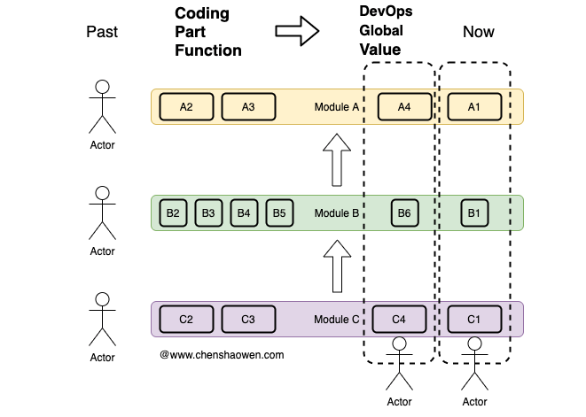

什么是 DevOps
没有很清晰的定义
快速发展的概念，总是会有各种解读和扩展。
有人说，DevOps = 工具 + 实践 + 文化。
DevOps 是一些列围绕工具、实践的文化理念，强调赋能团队、跨团队沟通、自动化。
也有人说，DevOps = 人 + 过程 + 产品。
DevOps 是人、过程、产品的结合，让团队能够持续地向终端用户交付价值。很多情况下，研发的目标是快速发布新特性，运维的目标是保障系统的可用性。DevOps 通过最佳实践体系，将研发和运维的目标对齐，提升稳定性的同时，加速产品新特性的交付速度。
还有人说，DevOps = 文化 + 实践 + 工具。
DevOps 是文化理念、实践和工具的结合，能够快速提升团队交付的能力。
上面的描述中都强调了文化，其实 DevOps 的一个方面就是文化。但文化的范畴太大，我们主要讨论的其中一部分。
端到端的价值交付
DevOps 强调的不是自动化，而是端到端的价值交付。
员工不应仅关注某个单一环节，而应面向客户交付价值。

传统的工作方式更像是大工厂，每个人只交付自己负责的环节。如上图，如果一个过程有三个步骤 A、B、C，那么就需要三个人各自负责。一旦某个环节出错，将影响整个交付。
DevOps 提倡的是面向价值的交付，只有同时完成了 A4、B6、C4，交付给用户之后，产出才有意义。因此，DevOps 更看重的是团队的协作，完整制品的快速交付，拒绝半成品。
这是对外，不断地交付，能够消除至上而下的压力。
团队自治，敏捷开发
端到端的价值交付，要求更大的自主权。
这意味着在架构和组织上需要进行调整，赋能给员工，小而完整的团队应该被鼓励。亚马逊的 Two pizza team 强调团队规模应该控制在两个披萨能够吃饱，大约就是十几个人的团队。
自治团队能够控制日常执行，但依然需要与组织的大目标对齐，否则也是无用功。
平台工具
平台工具不是 DevOps 的核心，但却又是不可或缺的。
我们面对的产品需求、研发流程、线上环境很复杂，软件工程依然是人类面临的最具调整的工程之一。
借助平台工具，我们能够减少错误，提升效率。